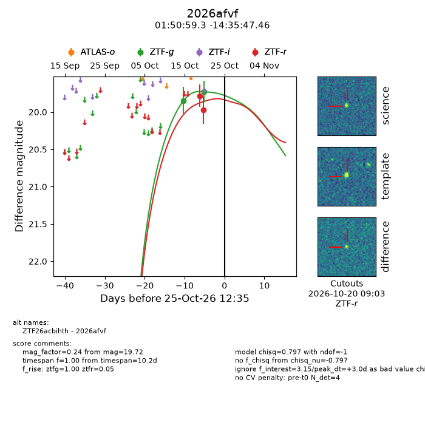
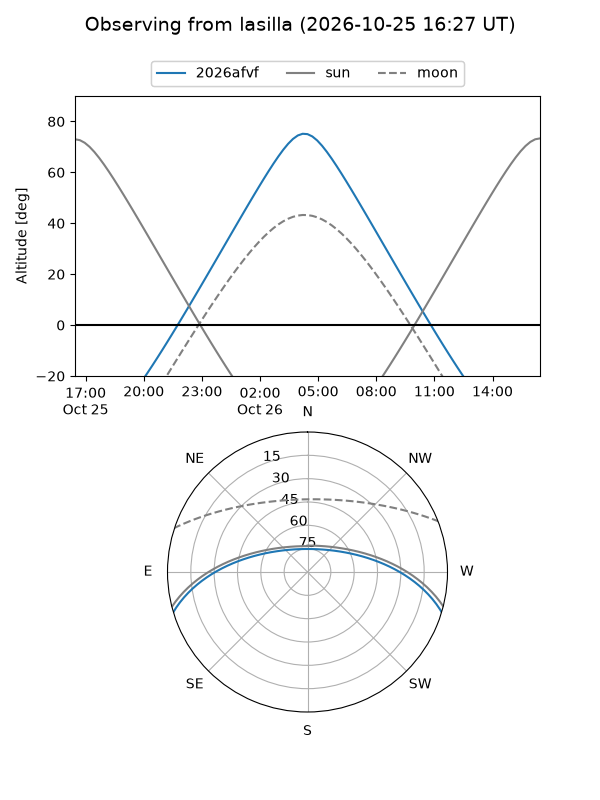
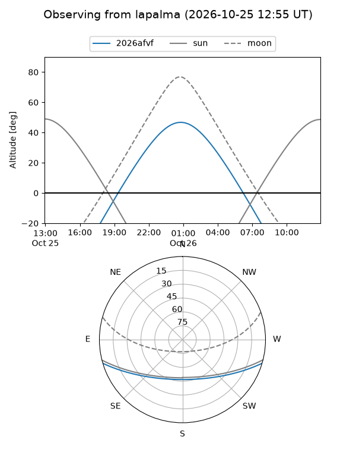
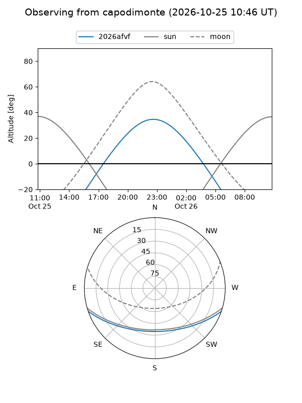
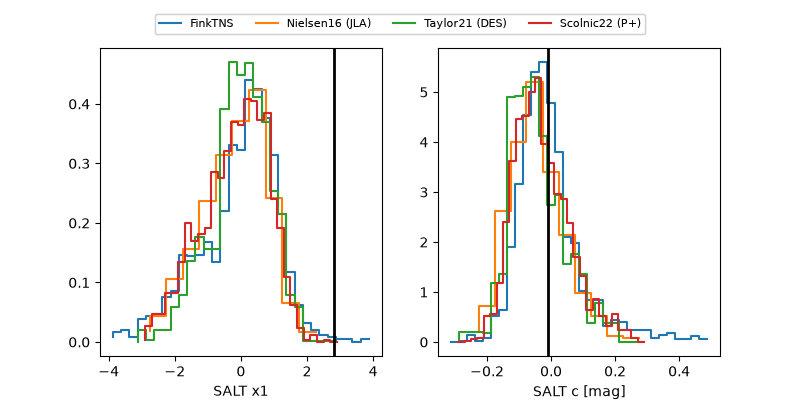

2026afvf
Target 2026afvf at 2026-10-26 00:21
Aliases and brokers:
FINK-ZTF: ztf.fink-portal.org/ZTF26acbihth
Lasair-ZTF: lasair-ztf.lsst.ac.uk/objects/ZTF26acbihth
ALeRCE-ZTF: alerce.online/object/ZTF26acbihth
YSE-PZ: ziggy.ucolick.org/yse/transient_detail/2026afvf
TNS name: wis-tns.org/object/2026afvf
Direct TNS query: direct search
alt names
ZTF26acbihth (ztf,fink_ztf)
2026afvf (tns,yse)
Coordinates:
equatorial (ra, dec) = 27.7469,-14.59652
equatorial (HMS+DMS) = 01:50:59.26,-14:35:47.46
galactic (l, b) = (173.8162,-71.30986)
Flags:
peak dt: +3.5
Photometry:
last ztfg=19.72, ztfr=19.97
2 ztfg, 2 ztfr detections
Lightcurve

Visibility



Additional plots
